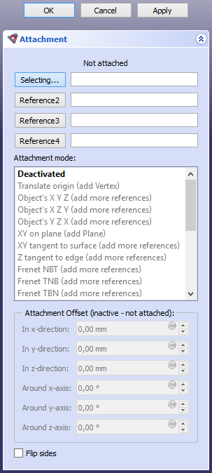

Part EditAttachment/bg
|
Part EditAttachment |
| Menu location |
|---|
| Part → Attachment |
| Workbenches |
| Part, PartDesign |
| Default shortcut |
| None |
| Introduced in version |
| 0.17 |
| See also |
| Placement, Basic Attachment Tutorial |
Описание
Командата Part EditAttachment прикачва обект към един или повече други обекти. Прикаченият обект е свързан с референтния(те) обект(и), което означава, че ако разположението или геометрията на референтния(те) обект(и) бъдат променен(и), разположението на прикачения обект ще се актуализира съответно.

Attacher engines
The attachment of an object is controlled by one of four attacher engines. The default engine that is used for an object depends on its type. An object's attacher engine can be changed via its ДанниAttacher Engine property (introduced in 1.0) or its hidden ДанниAttacher Type property.
The available engines are listed in the table below. Attacher engines control the ДанниPlacement of objects. All engines can be used for all objects that have this property. But the results of the last three make the most sense if the shape of the object matches the mentioned 'Logical Shape'.
| Attacher Engine | Attacher Type | Logical Shape |
|---|---|---|
| Engine 3D | Attacher::AttachEngine3D | |
| Engine Plane | Attacher::AttachEnginePlane | Planar face coincident with the XY-plane of the Placement |
| Engine Line | Attacher::AttachEngineLine | Straight edge collinear with the Z-axis of the Placement |
| Engine Point | Attacher::AttachEnginePoint | Vertex coincident with the origin of the Placement |
The rest of this page focuses on the Engine 3D. The modes of the other engines are only listed. Note that the modes of Engine Plane are in fact identical to those of Engine 3D.
Използване
- Изберете обекта, който да бъде прикачен.
- Направете едно от следните неща:
- Ако обектът вече има свойство ДанниMap Mode: кликнете в това поле в изгледа на свойствата и натиснете бутона ..., който се появява.
- Изберете от менюто Part → Прикачване.
- Отваря се панелът на задачата Прикачване.
- В горната част на панела на задачите може да се прочете "Неприкачено". Първият бутон с надпис Избиране... е оцветен, за да се посочи, че се очаква избиране в 3D изглед.
- Изберете връх, ръб или лице/равнина, принадлежащ към друг обект.
- В полето за въвеждане вдясно на бутона се показват референтният обект и поделемент. Например, ако е избрано лице на Part Box, полето може да се показва
Box:Face6. Етикетът на бутона сега показва типа на подизбора. - Наличните режими се филтрират въз основа на избраните препратки и тяхната подредба. Например за режими Подравняване O-Z-X на Подравняване O-Y-X първата препратка трябва да бъде връх. Ако първата препратка е поделемент от различен тип, те се премахват от списъка.
- Прикачено с режим <описание> вече се показва в горната част на панела на задачите.
- По избор изберете различен Attachment Modes|Режим на прикачване от списъка. За информация относно режимите на прикачване задръжте курсора на мишката върху тях, за да се появи подсказка.
- В зависимост от избрания режим добавете до още три препратки, като натиснете бутоните Препратка2, Препратка3 и Препратка4 и повторите стъпка 5. Също така е възможно да се зададат всички препратки, преди да изберете режим на прикачване.
- По избор задайте Отместване на прикачването.
- Натиснете Добре.
- Ако е приложимо, по желание променете свойството ДанниMap Path Parameter в Преглед на свойствата.
Режими на прикачване
Машина 3D


Деактивиран
Прикачването е деактивирано. Обектът може да бъде преместен чрез редактиране на свойството му Разположение.
Преместване на базовата точка
Базовата точка се съчетава с връх. Ориентацията все още се контролира от свойството Разположение на прикачения обект.
- Комбинации препратки
- Връх
X Y Z на обекта
Разположението е направено равно на Разположението на свързан обект.
- Комбинации препратки
- Any
- Conic
X Z Y на обекта
Осите X, Y и Z се съчетават съответно с локалните X, Z и -Y оси на свързан обект.
- Комбинации препратки
- Any
- Conic
Y Z X на обекта
The X, Y and Z axes are matched with a linked object's local Y, Z and X axes, respectively.
- Комбинации препратки
- Any
- Conic
XY on plane
The XY-plane is aligned to coincide with a planar face.
- Комбинации препратки
- Равнина
XY tangent to surface
The XY-plane is made tangent to a face at a vertex.
- Комбинации препратки
- Face, Vertex
- Vertex, Face
Z tangent to edge
The Z-axis is aligned to be tangent to an edge. An optional vertex defines where.
If no vertex is linked the ДанниMap Path Parameter property determines the point.
- Комбинации препратки
- :;
- Ръб
- Ръб, Връх
- Връх, Ръб
Frenet NBT

The X and Y axes are aligned to the normal (N) and binormal (B) axes of the Frenet-Serret coordinate system at a point on a curved edge. An optional vertex defines where.
If no vertex is linked the ДанниMap Path Parameter property determines the point. The object's origin is translated to the vertex if the vertex is first, or kept at the curve if the curve is first.
Frenet NBT is similar to Z tangent to edge, except that the X-axis is well-defined.
- Reference combinations
- Крива
- Крива, Връх
- Връх, Крива
Frenet TNB

The X and Y axes are aligned to the tangent (T) and normal (N) axes of the Frenet-Serret coordinate system at a point on a curved edge. An optional vertex defines where.
See Frenet NBT.
Frenet TBN

The X and Y axes are aligned to the tangent (T) and binormal (B) axes of the Frenet-Serret coordinate system at a point on a curved edge. An optional vertex defines where.
See Frenet NBT.
Concentric
The XY-plane is aligned to the osculating circle at a point on an edge. An optional vertex defines where.
If no vertex is linked the ДанниMap Path Parameter property determines the point.
- Reference combinations
- Curve
- Circle
- Curve, Vertex
- Circle, Vertex
- Vertex, Curve
- Vertex, Circle
Revolution Section
The Y-axis is aligned to match the axis of the osculating circle at a point on an edge. An optional vertex defines where.
See Concentric.
XY-plane by 3 points
The XY-plane is aligned to pass through three vertices. The X-axis will pass through the first two vertices.
- Reference combinations
- Vertex, Vertex, Vertex
- Line, Vertex
- Vertex, Line
- Line, Line
XZ-plane by 3 points
The XZ-plane is aligned to pass through three vertices. The X-axis will pass through the first two vertices.
See XY-plane by 3 points.
Folding

This is a special mode for folding polyhedra. Select four lines that share a common point in this order: contour line (1), fold line (2), other fold line (3), other contour line (4). To determine the coordinate system the selected contour lines are made coincident by rotating line 1 around line 2, and line 4 around line 3. The origin is matched with the common point, the X-axis is matched with line 2, the Y-axis is aligned towards the direction of the coincident contour lines.
- Reference combinations
- Line, Line, Line, Line
Inertia CS
The X, Y and Z axes are matched with those of an inertial coordinate system, constructed on principal axes of inertia and center of mass.
- Reference combinations
- Any
- Any, Any
- Any, Any, Any
- Any, Any, Any, Any
Align O-Z-X
The origin is matched with the first vertex. The Z and X axes are aligned towards a vertex or along a line.
See Align O-X-Y Type Attachment Modes for more details.
- Reference combinations
- Vertex, Vertex, Vertex
- Vertex, Vertex, Line
- Vertex, Line, Vertex
- Vertex, Line, Line
- Vertex, Vertex
- Vertex, Line
Align O-Z-Y
The origin is matched with the first vertex. The Z and Y axes are aligned towards a vertex or along a line.
See Align O-Z-X.
Align O-X-Y
The origin is matched with the first vertex. The X and Y axes are aligned towards a vertex or along a line.
See Align O-Z-X.
Align O-X-Z
The origin is matched with the first vertex. The X and Z axes are aligned towards a vertex or along a line.
See Align O-Z-X.
Align O-Y-Z
The origin is matched with the first vertex. The Y and Z axes are aligned towards a vertex or along a line.
See Align O-Z-X.
Align O-Y-X
The origin is matched with the first vertex. The Y and X axes are aligned towards a vertex or along a line.
See Align O-Z-X.
XY parallel to plane
The XY-plane is aligned to be plane-parallel to the XY-plane of the Placement of a linked object, and pass through a vertex. The origin is matched with the projection of the origin of the linked object onto the XY-plane.
Note that you have to select a whole object and not a subelement such as a face or plane.
- Reference combinations
- Any whole object (with a ДанниPlacement property), Vertex
Midplane between faces
The XY-plane is aligned to the plane midway between two planar faces. The origin is placed midway between the centers of the two faces, and the orientation equally bisects the angle between their normals.
- Reference combinations
- Plane, Plane
Engine Plane
- Deactivated
- Translate origin
- Object's XY
- Object's XZ
- Object's YZ
- Plane face
- Tangent to surface
- Normal to edge
- Frenet NB
- Frenet TN
- Frenet TB
- Concentric
- Revolution Section
- Plane by 3 points
- Normal to 3 points
- Folding
- Inertia 2-3
- Align O-N-X
- Align O-N-Y
- Align O-X-Y
- Align O-X-N
- Align O-Y-N
- Align O-Y-X
- XY parallel to plane introduced in 1.0
Engine Line
- Deactivated
- Object's X
- Object's Y
- Object's Z
- Axis of curvature
- Directrix1
- Directrix2
- Asymptote1
- Asymptote2
- Tangent
- Normal to edge
- Binormal
- Through two points
- Intersection introduced in 1.0
- Proximity line
- 1st principal axis
- 2nd principal axis
- 3rd principal axis
- Normal to surface
Engine Point
- Deactivated
- Object's origin
- Focus1
- Focus2
- On edge
- Center of curvature
- Center of mass
- Vertex
- Proximity point 1
- Proximity point 2
Attachment offset
Attachment Offset becomes active when an attachment mode other than Deactivated has been selected. It is used to apply a linear or rotary offset within the attachment coordinate system (ACS), as defined by the attachment mode and the referenced object(s).
For the Translate origin mode only the X-, Y- and Z-direction offsets have an effect.
- In X-direction: sets an offset distance along the X-axis of the ACS.
- In Y-direction: sets an offset distance along the Y-axis of the ACS.
- In Z-direction: sets an offset distance along the Z-axis of the ACS.
- Around X-axis: rotates the attached object around the X-axis of the ACS.
- Around Y-axis: rotates the attached object around the Y-axis of the ACS.
- Around Z-axis: rotates the attached object around the Z-axis of the ACS.
- Flip sides: if checked, the attachment is reversed. This is equivalent to rotating the object 180° around the Y-axis of the ACS.
Limitations
- If selecting two lines results in an error: "Points are collinear. Can't make a plane", try selecting three vertices instead [1].

- Creation and modification: New Sketch, Extrude, Revolve, Mirror, Scale, Fillet, Chamfer, Face From Wires, Ruled Surface, Loft, Sweep, Section, Cross-Sections, 3D Offset, 2D Offset, Thickness, Project on Surface, Appearance per Face
- Boolean: Compound, Explode Compound, Compound Filter, Linear Link Array, Polar Link Array, Circular Link Array, Path Link Array, Point Link Array, Boolean Operation, Cut, Union, Intersection, Connect Shapes, Embed Shapes, Cutout Shape, Boolean Fragments, Slice Apart, Slice to Compound, Boolean XOR, Check Geometry, Defeaturing
- Other tools: Box Selection, Shape From Mesh, Points From Shape, Convert to Solid, Reverse Shapes, Simple Copy, Transformed Copy, Shape Element Copy, Refine Shape, Set Tolerance, Persistent Section Cut, Attachment
- Preferences: Preferences, Fine tuning
- Getting started
- Installation: Download, Windows, Linux, Mac, Additional components, Docker, AppImage, Ubuntu Snap
- Basics: About FreeCAD, Interface, Mouse navigation, Selection methods, Object name, Preferences, Workbenches, Document structure, Properties, Help FreeCAD, Donate
- Help: Tutorials, Video tutorials
- Workbenches: Std Base, Assembly, BIM, CAM, Draft, FEM, Inspection, Material, Mesh, OpenSCAD, Part, PartDesign, Points, Reverse Engineering, Robot, Sketcher, Spreadsheet, Surface, TechDraw, Test Framework
- Hubs: User hub, Power users hub, Developer hub